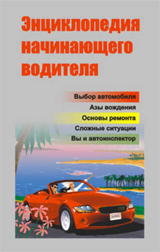

По материалам книги Александра Александровича Ханникова
" Энциклопедия начинающего водителя . "
А также из других источников Интернет
Уважаемый Читатель - после ознакомления с Книгой
рекомендую Вам заказать ее бумажное издание.
В книге начинающие водители найдут много полезной и разнообразной практической информации, которая поможет чувствовать себя комфортно и уверенно за рулем автомобиля. В ней изложены основные вопросы по устройству автомобиля, даны советы по уходу, рассказано о том, как быстро устранить неисправности и неполадки, возникшие в пути, а также оказать первую помощь в случае дорожно-транспортного происшествия.
Особое внимание уделено основам управления автомобилем в различных дорожных ситуациях, психологическим и физическим требованиям к водителю, обеспечивающим безопасность движения. Кроме того, обширный справочный материал поможет в подготовке к сдаче экзаменов в ГАИ, в общении с работниками автоинспекции и, возможно, поможет избежать разного рода ошибок.
Приведены характеристики автомобильного топлива, смазочных материалов, технических жидкостей, даны рекомендации по их подбору и применению. Рассказано о страховании автомобиля, о том, как обезопасить его от угона, и о многом другом.
Для начинающих водителей и широкого круга читателей.
Введение.
Человек. Автомобиль. Дорога.
Психофизиологические характеристики водителя.
Общее устройство и классификация автомобилей.
Основные параметры автомобиля.
Характеристики кузовов легковых автомобилей.
Управление автомобилем.
Технические аспекты безопасного управления.
Оценка дорожной ситуации и организация внимания во время движения.
Категории безопасности автомобиля.
Дистанция и скорость движения.
Как начинать движение. Трогание с места на подъеме.
Маневры.
Перестроение.
Развороты.
Движение задним ходом.
Повороты. Проезд перекрестков.
Обгон. Встречный разъезд.
Правила торможения и остановки автомобиля.
Факторы безопасности.
Факторы, провоцирующие дорожно-транспортные происшествия.
Основы безопасного вождения в ночное время.
Основы безопасного вождения в дождь.
Основы безопасного вождения при движении в тумане.
Основы безопасного вождения в зимних условиях.
Основы безопасного вождения в условиях бездорожья.
Правильный выход из опасных и критических ситуаций.
Техническое обслуживание автомобиля.
Необходимость технического обслуживания автомобиля.
Обкатка автомобиля и первый выезд.
Автомобильное топливо, смазочные материалы и технические жидкости.
Рекомендации по техническому обслуживанию автомобиля.
Осмотр креплений деталей, узлов и механизмов.
Техническое обслуживание двигателя.
Техническое обслуживание трансмиссии.
Техническое обслуживание системы зажигания.
Техническое обслуживание рулевого управления.
Техническое обслуживание ходовой части.
Техническое обслуживание тормозной системы.
Техническое обслуживание кузова.
Нарушения слаженного хода автомобиля.
Общие рекомендации.
Неисправности двигателя.
Неисправности трансмиссии.
Неисправности рулевого управления.
Неисправности тормозной системы.
Неисправности освещения и световой сигнализации.
Замена колеса.
Буксировка автомобиля.
Дорожно-транспортные происшествия.
Классификация дорожно-транспортных происшествий и их причины.
Анализ причин дорожно-транспортных происшествий.
Как преодолеть утомление.
Еще раз о канонах безопасного движения.
Порядок действий в случае дорожно-транспортного происшествия.
Дорожно-транспортное происшествие: добровольное возмещение ущерба.
Ответственность за ущерб, причиненный в результате дорожно-транспортного происшествия.
Доврачебная медицинская помощь.
Рекомендации по оказанию первой доврачебной помощи.
Основные признаки при заболеваниях в пути и оказание помощи.
Состав автомобильной аптечки.
Социум и дорога.
Правила общения с сотрудниками автоинспекции.
«Подстава»: Правильный выход из ситуации.
Страховые компании и страхование автомобиля.
Безопасность автомобиля.
Что еще нужно знать об автомобиле.
Правила хранения автомобиля.
Правила этикета.
Путешествие на автомобиле.
Влияние легкового транспорта на окружающую среду.
Упражнения.
Задачи для контроля знаний Правил дорожного движения и техники управления автомобилем.
Из истории легкового автомобиля.
Краткий словарь автомобилиста.
Список литературы.